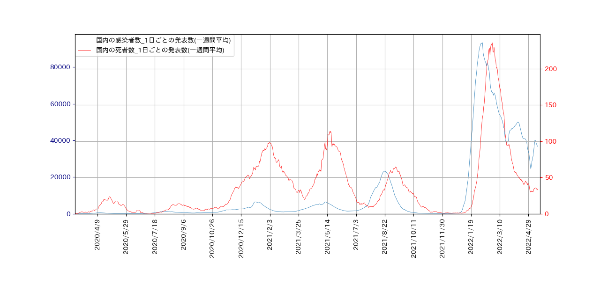
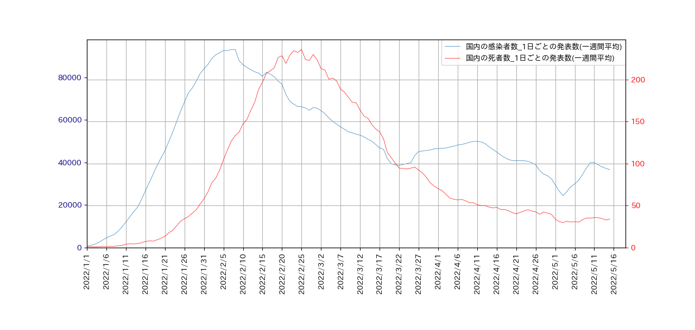
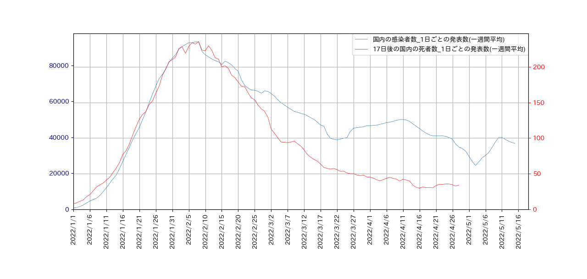
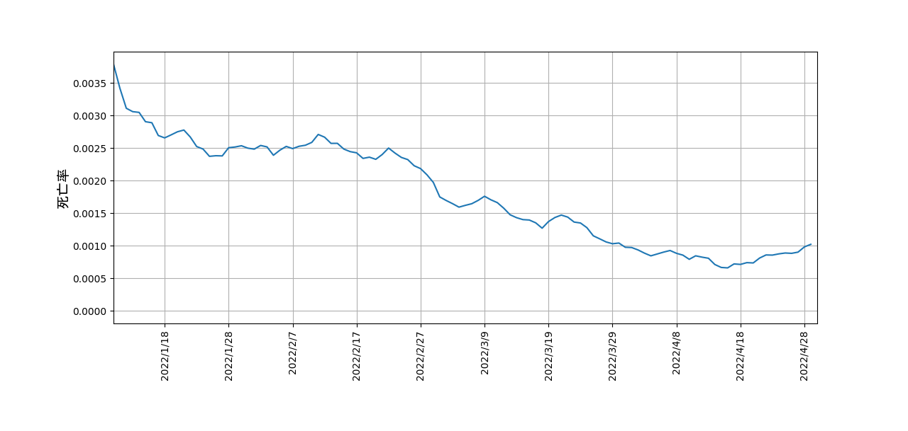
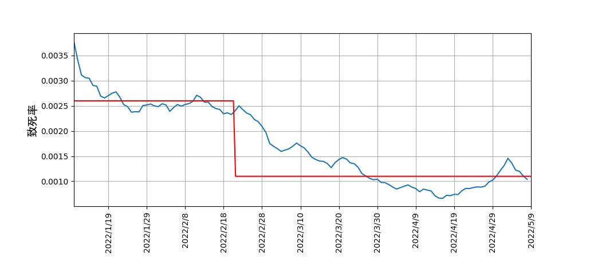

Covid-19 1日当たりの感染者数と死者数の推移(第6波以降)
NHKのデータは日々更新しますので、2022年5月19日までの最新データによる1日ごとの感染者数と死者数の7日間の
移動平均グラフを一つにまとめて表示します。

作成したプログラムについては、
ここ
をご覧ください。
第6波以降は、次のようになります。

作成したプログラムについては、
ここ
をご覧ください。
この図から、死者数のピークは、新規感染者のピークから17日遅れでやってくることが分かります。
そこで、死者数のグラフを左に17日シフトすると、こんな感じになります。

2つのカーブは、2022年2月20日頃までは、見事に重なっていることが分かります。
そこで、ある日の死亡率を、
\[
\rm ある日の死亡率 = \frac{17日後の死亡者数}{その日の新規感染者数}
\]
と定義することにします。すると、各々の日にちごとの死亡率のグラフは、次のようになります。

この図から、2022年2月20日頃までは、0.0025だった死亡率が、それ以降、徐々に下がり始め、現在では
0.001程度であることが分かります。
【追記】
この文章を書いてから、似たような解析が無いか色々調べたところ、次のことが分かった。
- 今回の場合、「死亡率(Mortality)」という言葉は適切ではなく、「致死率(case fatality rate)」
を使うべきであった。
広辞苑(第5版)によると、
- しぼう‐りつ【死亡率】
死亡する比率。人口調査などでは、普通、一定期間における人口千人当りの
割合で表される。
-
ちめい‐りつ【致命率】
ある疾患による死亡者数を患者数で割った比率。百分率または千分率で示す。
致死率。
- ある日の致死率の定義 \(\rm \frac{17日後の死亡者数}{その日の新規感染者数}\)の使用例があるかを調べると、
2つ見つかった。詳しく調べると、
もっとあるかもしれない。
三菱総合研究所の致死率(a)の定義は、彼らの記号を用いると、\(a =x_t/y_{t-b} \)である。
一方、私の定義を彼らの流儀で書くと、\(a_t = x_{t+b}/y_t \) となる。\( a \) は時間の関数である。
日経新聞の致死率(死亡率)も時間の関数であるが、、\(a_t = x_{t}/y_{t-b} \) のようである。
先の解析で死亡率と書いた致死率の時間変化の求め方が妥当かどうか調べるため、第6波を便宜的に2期に分けて、
致死率の平均を求めると、
| 期 | 種類 | 期間 | 人数 | 致死率 |
| I |
新規感染者 | 2021/11/26 から 2022/2/21 | 2,822,037 |
0.0026 |
死亡者 | 2021/12/16 から 2022/3/10 | 7,346 |
| II |
新規感染者 | 2022/2/22 から 2022/5/26 | 4,197,133 |
0.0011 |
死亡者 | 2022/3/11 から 2022/5/26 | 30,467 |
第6波における日にち毎の致死率のグラフに期間毎の平均致死率を重ねて表示すると、以下のようになります。
